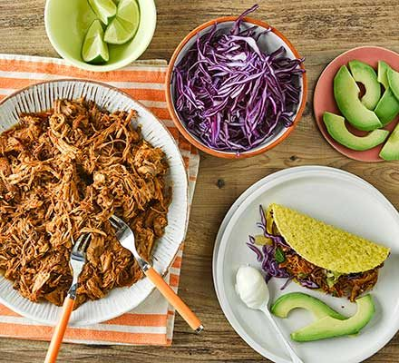

Pulled Pork Tacos with Pineapple Salsa

Description
Put the pork for these pulled pork tacos in the slow cooker in the morning, and you’ll have a family feast for dinner. Serve with cabbage, avocado and salsa.
Ingredients
- 1.5kg boneless pork shoulder, rind removed and cut into 6 chunks
- 2 garlic cloves, crushed
- 2 tbsp tomato purée
- 1 tbsp chipotle paste
- 1 orange, juiced
- 432g can pineapple, juice only (save the chunks for the salsa, below)
- 2 tsp dried oregano
- 2 tsp smoked paprika
- 1 tsp ground cumin
- 1 tsp ground coriander
- grating of fresh nutmeg
For the pineapple salsa
- 432g can pineapple, drained
- 1/2 red onion, finely chopped
- handful of coriander, chopped
- 1 lime, juiced
- 1 red chilli, chopped
To serve
- 8-10 taco shells or wraps
- 1/2 red cabbage, finely shredded
- 1 avocado, sliced
- 100ml soured cream (optional)
Steps
- Put the pork in a large, lidded ovenproof dish with the remaining ingredients and mix well to coat. If you can, chill and marinate overnight.
- Heat the oven to 140C/120C fan/gas 1. Put the lid on the dish and cook on the middle shelf for 4 hrs. Check after 2 hrs and spoon over the juices. Check the meat is tender by pulling it apart with two forks. If it resists, cook for 1-2 hrs more.
- Mix the ingredients for the salsa in a bowl and warm the tacos. Shred the pork and remove any fat or sinew. Serve with the cabbage, avocado, soured cream and salsa.
Back to main page